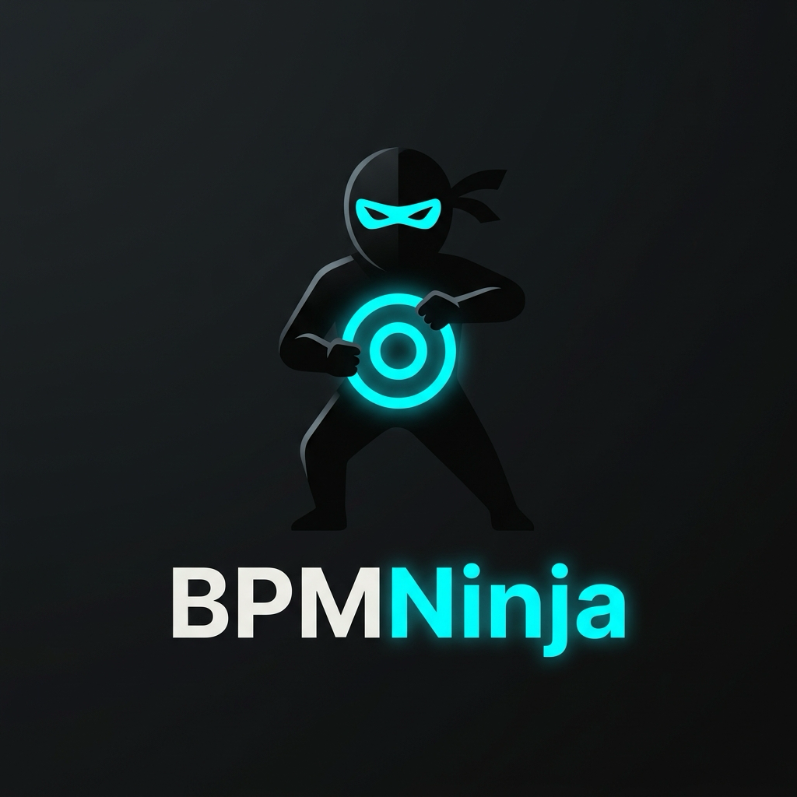

BPMNinja
BPMNinjaA fast BPMN 2.0 workflow engine, written in Rust
Token-based execution, NATS JetStream persistence, Camunda-style external tasks, deploy-time model checking, a REST API and a desktop modeler — in one lean, open-source stack.

Features
What the engine does today (v0.7.24).
Token-based execution
Each path is an independent token. 29 BPMN element types: events, tasks, XOR/AND/OR/complex/event-based gateways, boundary events, call activities, sub-processes.
NATS JetStream persistence
KV buckets for state, object store for files and BPMN XML, streams for history. Fail-closed durability and a bounded retry queue.
Camunda-style external tasks
Fetch-and-lock with long polling — waiting workers are woken the moment a task becomes available. TypeScript worker client included.
Deploy-time model checking
Every deployed model is checked for deadlocks, livelocks, unsafe parallelism and dead activities with rust_bpmn_analyzer.
Timers & messages
ISO 8601 durations, dates, cron and repeating cycles. Event-driven scheduler fires timers when due. Message correlation by name and business key.
Sandboxed scripting
Rhai scripts with operation, memory and time limits — one shared engine with a cache of compiled scripts.
Operations
Suspend/resume, token move, version migration, incidents with retry/resolve, history with diffs, Prometheus metrics, SSE push events.
Desktop modeler
Tauri + React + bpmn-js: model, deploy, watch instances live, inspect history, browse storage.
Architecture
Hexagonal: the core engine has no network or disk code; storage is a trait with NATS and in-memory adapters.
| Crate / package | Role |
|---|---|
engine-core | State machine, token execution, gateways, scripting, history |
bpmn-parser | BPMN 2.0 XML → process definition (sub-processes flattened) |
persistence-nats | NATS JetStream adapter (KV, object store, streams) |
persistence-memory | In-memory adapter for tests and local runs |
engine-server | Axum REST API, SSE, timer scheduler, auth, model checking |
desktop-tauri | Desktop modeler and monitoring UI |
@bpmninja/external-task-client | TypeScript worker SDK |
Quick start
Start NATS and the engine, then deploy a model.
# 1. NATS with JetStream
docker compose up -d nats
# 2. Engine server on http://localhost:8081
cargo run -p engine-server
# 3. Deploy a BPMN file
curl -X POST http://localhost:8081/api/deploy \
-H 'Content-Type: application/json' \
-d "{\"name\":\"order.bpmn\",\"xml\":$(jq -Rs . < order.bpmn)}"Performance
Measured improvements from the current optimization work (Criterion medians, before → after).
| Benchmark | Before | After | Change |
|---|---|---|---|
NATS save_instance | 496 µs | 194 µs | −61% |
| Process with 10 script tasks | 6.54 ms | 0.46 ms | −93% |
| Parallel fork/join, 16 script branches | 10.3 ms | 0.81 ms | −92% |
| Engine with NATS: start → 5 script tasks → end | 7.78 ms | 2.11 ms | −73% |
| External task hand-off to a waiting worker | up to 500 ms | immediate | event-driven |
Local measurements on a development machine with a local NATS server; absolute numbers vary by hardware. Run them yourself with cargo bench -p engine-core and cargo bench -p persistence-nats.
Documentation
Everything lives in the repository.
Contributors
People and tools building BPMNinja.
Yasir Karam
@yasir2000 · Maintainer
Claude Code
AI coding agent · Co-author